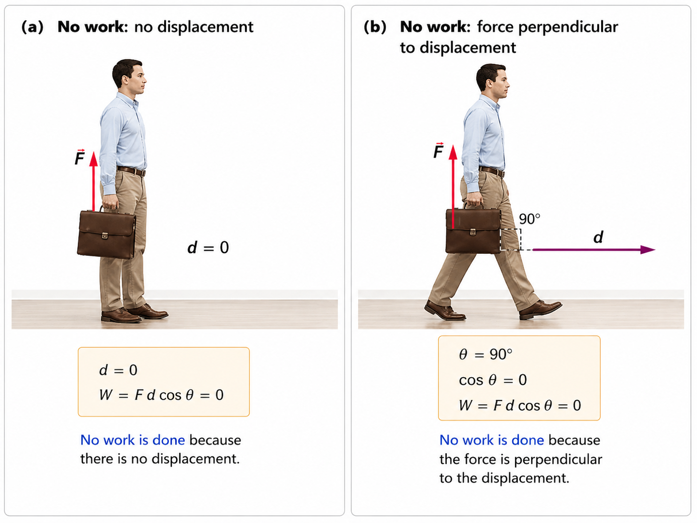
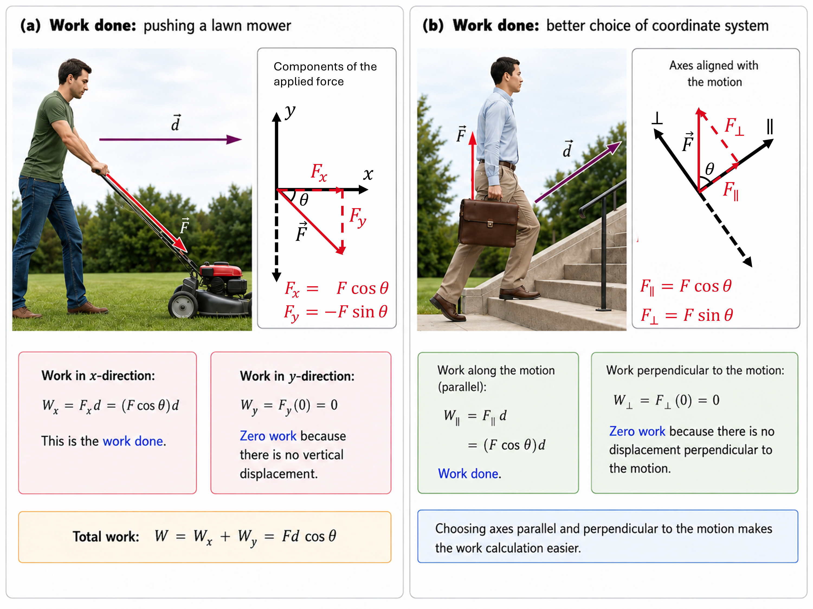
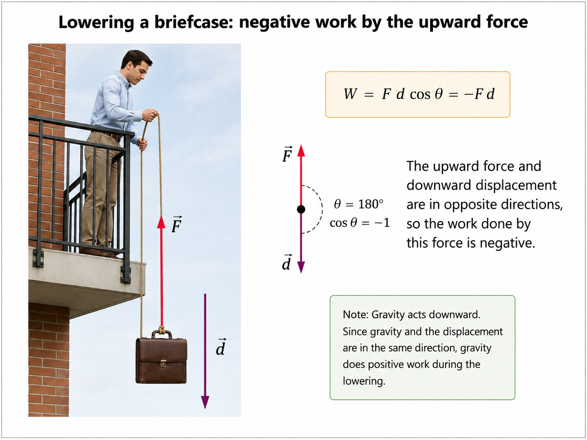
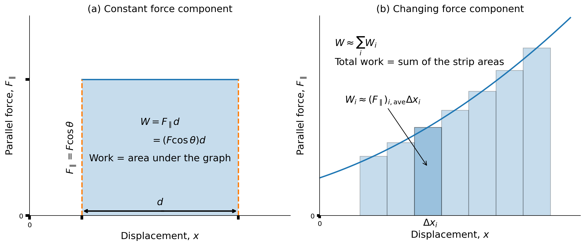
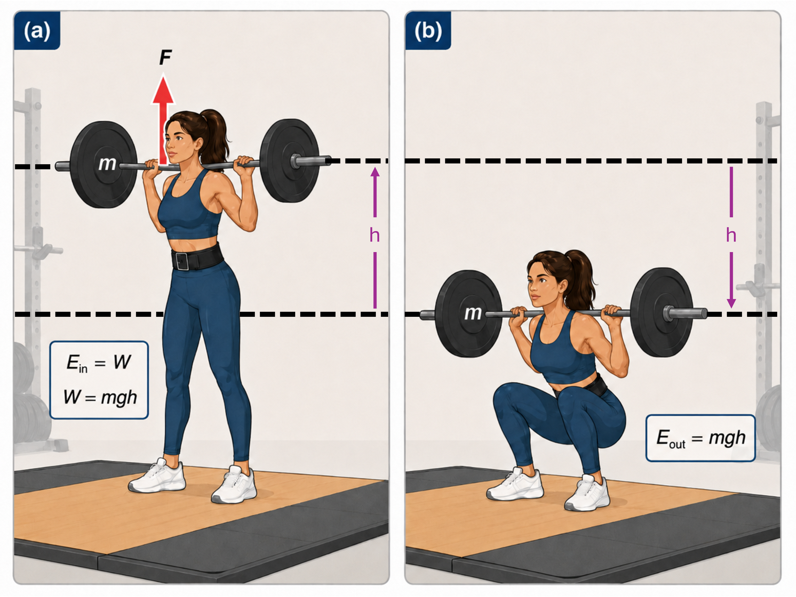

6. Work & Energy#
Aug 26, 2026 | 2726 words | 18 min read
Energy plays a role in everyday events and scientific phenomena. You can cite examples of what people call energy that may not be scientific. For example, someone has an energetic personality, or you don’t have the energy (i.e., desire) to complete a particular task.
Energy has a specific meaning in the context of physics, where it is the ability to do work. Energy can change forms, but it cannot appear from nothing or disappear without a trace. Energy is one of a handful of physical quantities that we say is conserved.
A conserved quantity cannot be created nor destroyed, so they are useful for bookkeeping and help physicists constrain the range of outcomes possible.
6.1. Work#
6.1.1. What It Means to Do Work#
The scientific definition of work differs from its everyday meaning, where activities we think of as hard work (e.g., writing an exam or holding up a heavy load) are not work as defined in physics. The scientific definition of work reveals its relation ship to energy. Whenever work is done, energy is transferred.
The work don on a system by a constant force is defined to be the product of the component of the force in the direction of motion times the distance through which the force acts. For work to be done, a force must be exerted and there must be a displacement in the direction of (i.e., parallel to) the force. Work is a scalar quantity that depends on the displacement of the system \(\vec{d}\), the applied force \(\vec{F}\) and the angle \(\theta\) between \(\vec{F}\) and \(\vec{d}\). Mathematically, it is given by
Note that the second form depends sole on the magnitude of \(\vec{F}\) and \(\vec{d}\), as given by the absolute values.
What is Work?
The work done on a system by a constant force is the product of the component of the force in the direction of the motion times the distance through which the force acts. For motion in one-dimension, this is expressed in equation form as
where \(W\) is work, \(F\) is the magnitude of the applied force, \(d\) is the magnitude of the displacement, and \(\theta\) is the angle between \(\vec{F}\) and \(\vec{d}\).
For work to be done, there must be a force \(\vec{F}\) applied in the same direction as the displacement \(\vec{d}\). Figure 6.1 illustrates to scenarios where the work done is zero. In the first situation, no work is done because the displacement is zero. We can see that the angle \(\theta\) does not matter because \(d=0\) and anything multiplied by zero is itself zero. In the second situation, the work done is zero because the displacement is perpendicular (\(\theta = 90^\circ\)) to the applied force. You could argue that holding the briefcase is work for your muscles. This is true, but it is the work of the muscles against one another, but they are doing no work on the system of interest (i.e., the briefcase-Earth system).

Fig. 6.1 Two ways a force can do zero work. In (a), the briefcase does not move, so \(d=0\) and the work done by the supporting force is zero. In (b), the briefcase moves horizontally while the supporting force is vertical. Because the force is perpendicular to the displacement, \(\theta=90^\circ\) and \(W=Fd\cos\theta=0\).#

Fig. 6.2 Only the component of force parallel to the displacement does work. In (a), the applied force on the lawn mower is separated into horizontal and vertical components. The mower has a horizontal displacement, so the horizontal component \(F_x=F\cos\theta\) does work while the vertical component does zero work because there is no vertical displacement. In (b), choosing coordinate axes parallel and perpendicular to the displacement makes the same idea explicit: \(F_{\parallel}\) contributes to the work, whereas \(F_{\perp}\) does not.#

Fig. 6.3 A force does negative work when it points opposite the displacement. As the briefcase is lowered, its displacement is downward while the tension exerted by the rope is upward. The angle between these vectors is therefore \(\theta=180^\circ\), so \(\cos\theta=-1\) and the work done by the tension is \(W=-Fd\). Gravity points in the same direction as the displacement and therefore does positive work on the briefcase during the lowering.#
Figure 6.2 illustrates two cases where only one-component is aligned with the displacement, and thus is able to do work. The other component is perpendicular to the displacement and does not do any work. In Fig. 6.2a, we choose a coordinate system so that the \(x\)-axis aligns with the displacement. This makes it easier to determine the work after breaking it into components. In Fig. 6.2b, we rotate the coordinate system so that the force components align with either the perpendicular (\(\perp\)) or parallel \(\left(\parallel \right)\) direction. The parallel direction is aligned with the displacement \(\vec{d}\).
Energy is transferred into the motion of the lawnmower or into the briefcase. It is possible to do negative work, which involves energy transfer in the reverse direction. In Figure 6.3 energy is transferred from the briefcase upwards to the man’s arms. The man is doing negative work on the briefcase, which removes (gravitational) energy from it by lowering it to the ground. Since the force and displacement are anti-parallel, the angle between them is \(\theta =180^\circ\), and \(\cos{180^\circ} = -1\). Therefore, the work \(W\) is negative.
6.1.2. Calculating Work#
Work and energy have the same units, which are derived from a force times a distance. In SI units, work and energy are measured in Newton-meters. A newton-meter is given a special name called a joule (\(\rm J\)), where \(1\ {\rm J} = 1\ {\rm N\cdot m} = 1\ {\rm kg\cdot m^2/s^2}\).
Everyday action |
Energy |
What the energy represents |
|---|---|---|
Lift a \(1\ {\rm g}\) paper clip by \(10\ {\rm cm}\) |
\(\approx 0.001\ {\rm J}\) |
A very small amount of gravitational potential energy. |
Lift a \(200\ {\rm g}\) smartphone by \(50\ {\rm cm}\) |
\(\approx 1\ {\rm J}\) |
Raising a typical phone from a desk to about chest height. |
Lift a \(100\ {\rm g}\) apple by \(1.02\ {\rm m}\) |
\(\approx 1\ {\rm J}\) |
Since \(\Delta U_g=mgh\), lifting a small apple about one meter requires roughly one joule of mechanical energy. |
Lift a \(1\ {\rm kg}\) bottle of water by \(1\ {\rm m}\) |
\(\approx 10\ {\rm J}\) |
About ten times the energy needed to lift the apple the same distance. |
Throw a \(145\ {\rm g}\) baseball at \(20\ {\rm m/s}\) |
\(\approx 29\ {\rm J}\) |
The translational kinetic energy of the baseball after it leaves your hand. |
Lift a \(10\ {\rm kg}\) backpack by \(1\ {\rm m}\) |
\(\approx 98\ {\rm J}\) |
Roughly \(100\ {\rm J}\) of gravitational potential energy. |
A \(70\ {\rm kg}\) person climbs one \(18\ {\rm cm}\) stair |
\(\approx 120\ {\rm J}\) |
The increase in the person’s gravitational potential energy. |
A \(70\ {\rm kg}\) person runs at \(3\ {\rm m/s}\) |
\(\approx 320\ {\rm J}\) |
The person’s translational kinetic energy at that speed. |
A \(70\ {\rm kg}\) person climbs one \(3\ {\rm m}\) floor |
\(\approx 2.1\ {\rm kJ}\) |
The increase in gravitational potential energy from climbing one story. |
A \(1500\ {\rm kg}\) car travels at \(30\ {\rm mph}\) (\(13.4\ {\rm m/s}\)) |
\(\approx 135\ {\rm kJ}\) |
The translational kinetic energy of the moving car. |
6.2. Kinetic Energy and the Work-Energy Theorem#
6.2.1. Work Transfers Energy#
What happens to the work done on a system?
Energy is transferred into the system, which can take a different form depending on the situation. In Fig. 6.2a, energy is put in the mower by the person, which is removed continuously by friction, and eventually leaves the system in the form of heat transfer. The man does work on the briefcase as he carries it upstairs (see Fig. 6.2b), where the energy is stored in the briefcase-Earth system and can be recovered by lowering it (see Fig. 6.3).
6.2.2. Net Work and the Work-Energy Theorem#
From Newton’s second law, we know that a net force causes an acceleration, or \(F_{\rm net} = ma\) in scalar form. Let’s consider the total (or net) work done on a system. The net work is defined as the sum of work on an object, which can be written in terms of the net force on an object. Mathematically, this is
where \(\theta\) is the angle between the force and displacement vectors.

Fig. 6.4 Work as the area under a force-displacement graph. In (a), the component of the force parallel to the displacement is constant. The shaded region is a rectangle with height \(F_{\parallel}=F\cos\theta\) and width \(d\), so its area—and therefore the work done—is \(W=F_{\parallel}d=(F\cos\theta)d\). In (b), the parallel component of the force changes with displacement. Dividing the motion into short intervals allows the work to be approximated by adding the areas of the individual strips, \(W\approx\sum_i W_i\), where \(W_i\approx(F_{\parallel})_{i,\mathrm{ave}}\Delta x_i\). Adapted from OpenStax, College Physics 2e, Figure 7.3.#
Figure 6.4a shows a graph of parallel force \(F_\parallel\) versus the displacement \(x\). For a constant force, you can see the area under the graph is \(F_\parallel d\), or simply \(A= l \times w\). Substituting \(F_\parallel = F\cos{\theta}\), we find that the work done as \(W = Fd\cos{\theta}\).
For a variable force, we break it into pieces where the displacement is \(\Delta x_i\) of a rectangle and use the average parallel force \((F\cos\theta)_{i(ave)}\). The total work is simply found by adding up the area of all the strips. Work is the total area under the curve.
Consider the net work for the 1D motion of a package on a roller belt conveyor system. The force of gravity and the normal force acting on the package are perpendicular to the displacement, and thus do no work. The net force arises solely from the horizontal applied force \(\vec{F}_{\rm app}\) and friction \(\vec{f}\). The net force is parallel to the displacement (i.e., \(\theta = 0^\circ\) and \(\cos{\theta} = 1\)), so that the net work is given by
The net force \(\vec{F}_{\rm net}\) will accelerate the package from \(v_0\) to \(v\). Then the kinetic energy of the package increases, which indicates that the net work done on the system is positive. Using Newton’s second law, we can find another form which gives
Fig. 6.5 Forces acting on a package moving horizontally. The applied force \(\vec{F}_{\rm app}\) points in the same direction as the displacement \(\vec{d}\) and therefore does positive work, while friction \(\vec{f}\) acts opposite the displacement and does negative work. The normal force \(\vec{N}\) and weight \(\vec{w}\) are perpendicular to the displacement, so each does zero work. The net work is therefore determined by the horizontal forces. Source: OpenStax, College Physics 2e, Figure 7.4.#
Recall our kinematics equations, we can get a relationship between the net work and the speed given to a system by a net force. In particular, we start with \(v^2 = v_0^2 + 2a(x-x_0)\) and realize that \(d = x - x_0\). Using some algebra, we have
which can be substituted into the expression for the net work \(W_{\rm net}\). We find that
Through algebra, the \(d\) cancels and we re-arrange to obtain
which is called the work-energy theorem.
The Work-Energy Theorem
The net work on a system equals the change in the kinetic energy \(\rm KE\),
The translational kinetic energy (\(\rm KE\)) describes the energy needed to move a mass \(m\) at a speed \(v\). Mathematically, we write the translational kinetic energy as
Notice that kinetic energy is proportional to the speed squared. This means that a car traveling at \(100\ {\rm kph}\) has four times the kinetic energy of a car of the same mass moving at \(50\ {\rm kph}\). This explains why high speed crashes are so devastating and why your stopping distance is larger than you expect at high speed.
6.3. Gravitational Potential Energy#
6.3.1. Work Done Against Gravity#
Climbing stairs and lifting objects are both examples of work done against the gravitational force. When there is work, there is a transfer of energy between systems. The work done against the gravitational force goes into an important form of stored energy.
Consider the work done by lifting an object of mass \(m\) through a height \(h\), near Earth’s surface. If the object is lifted (straight up) at constant speed, then the force needed is equal to its weight \(mg\). Then the work is calculated by
To account for the work done (or energy transfer), we define this work as the gravitational potential energy (\(\rm PE_g\)) put into (or gained by) the object-Earth system. We recognize that the energy is stored in the gravitational field of Earth.

Fig. 6.6 Work and gravitational potential energy. In (a), the weightlifter does work to raise the barbell through a vertical height \(h\). For a slow lift, the work done against gravity is \(W=mgh\), and this energy is stored as gravitational potential energy in the barbell–Earth system. In (b), lowering the barbell through the same height decreases the gravitational potential energy by \(mgh\), transferring energy out of the barbell–Earth system. The two dashed lines mark the same lower and upper reference levels in both panels. Adapted from OpenStax, College Physics 2e, Figure 7.5.#
Why do we use the word “system”?
Potential energy is a property of a system rather than a single object due to its physical position. The force applied to the object is an external force that is outside the system of interest. When the force does positive work, it increases the gravitational potential energy of the system.
Because the gravitational potential energy depends on the relative position (through \(h\) or \(y-y_0\)), we need a reference level at which to set the potential energy to zero. We usually choose this point to be Earth’s surface, but this point is arbitrary because the height is a difference of positions. The difference in gravitational potential energy of an object (in the Earth-object system) between two rungs of a ladder is the same independent of whether we pick the first two rungs or the last two rungs.
6.3.2. Converting Between Potential and Kinetic Energy#
Gravitational potential energy can be converted into other forms of energy (e.g., kinetic energy). If we release a mass \(m\) at a height \(h\), then the gravitational force will do an amount of work equal to \(mgh\) on it. This increases teh kinetic energy of the mass by that same amount (via the work-energy theorem).
More precisely, we define the change in gravitational potential energy as
Note that \(h>0\) when the final height is greater than the initial height, and \(h<0\) when the final height is below the initial height. Consider a \(10\ {\rm kg}\) barbell (see Figure 6.6) that is raised by \(1.0\ {\rm m}\), then its change in gravitational potential energy is
The units of gravitational potential energy are joules, which is the same for work and other forms of energy. As the barbell is lowered, it gives up its \(98\ {\rm J}\) of gravitational potential energy, without directly considering the force of gravity that does the work.
6.3.3. Using Potential Energy to Simplify Calculations#
6.4. Conservative Forces and Potential Energy#
6.5. Nonconservative Forces#
6.6. Conservation of Energy#
6.7. Power#
6.8. Work, Energy, and Power in Humans#
6.9. In-Class Exercises#
6.9.1. Instructions#
You will use the final 20 minutes of class to begin the problems assigned for that class day. First, you must make a serious attempt on each assigned problem independently. After developing your own approach, you may compare ideas and discuss the problems with other students.
Each student must prepare and submit an individual solution. Organize each quantitative solution using the Problem–Model–Math–Conclusion format. Show your reasoning, equations, substitutions with units, and interpretation of the result. A numerical answer without supporting work is not a complete solution.
Open this page in Google Colab so you can easily copy the problems to the template without retyping them.
Export your completed Jupyter notebook as a PDF and submit the PDF to D2L by 11:59 p.m. CT on the day of class. The PDF filename must follow the format LastName_ChXX_SetY.pdf, where XX is the two-digit chapter number and Y is the problem-set number.
Make your own copy before beginning
A read-only Jupyter notebook template is available on D2L. Before entering any work, you must make your own editable copy of the notebook by selecting Save a copy in Drive.
Changes made directly to the read-only template cannot be saved. It does not matter how much work you enter: if you have not made your own copy, your changes will be lost. Confirm that you can rename and save your copy before beginning the problems.
6.9.2. Problems#
Problem 1
Problem 2
Problem 3
Problem 4
Problem 5
6.10. Homework#
6.10.1. Instructions#
Homework assignment
The homework is designed to give you regular practice applying the ideas developed in this chapter. A read-only Jupyter notebook template for the assignment is available on D2L. Before entering any work, you must make your own editable copy of the notebook. Changes made directly to the read-only template cannot be saved, so confirm that you can rename and save your copy before beginning.
There are two types of homework questions:
Conceptual questions: Copy the question into your notebook and answer it under a heading titled The Conclusion. Your response should be a paragraph that directly answers the question and explains the physical reasoning behind your answer. A Model or Math section is not required unless the question genuinely requires a calculation.
Quantitative questions: Copy the problem into your notebook and organize your solution using the Problem–Model–Math–Conclusion format. Identify the physical situation, assumptions, knowns, unknowns, and sign convention in the Model; develop and apply the necessary equations in the Math; and state, interpret, and check your result in the Conclusion. Include units in numerical substitutions.
The worked examples and Check Your Understanding questions on the course webpage provide examples of the reasoning and solution style expected in your homework.
Don’t wait until the night it is due
Homework is much easier to manage when you complete a couple of problems at a time as you work through the chapter. This gives you time to identify concepts that you do not understand and ask questions before the due date. Trying to complete the entire assignment the night it is due usually leaves little time to diagnose mistakes or revisit the course material.
Submission
When your assignment is complete, export the Jupyter notebook as a PDF and submit the PDF to D2L by 11:59 p.m. CT on the due date.
Name your submitted file using the format LastName_ChXX_HW.pdf. Replace LastName with your last name and XX with the two-digit chapter number. For example, homework for Chapter 2 submitted by Jane Smith would be Smith_Ch02_HW.pdf.
Before submitting, open the PDF and make sure that all questions, equations, figures, and solutions are visible and readable.
6.10.2. Conceptual Questions#
Problem 1
Problem 2
6.10.3. Quantitative Questions#
Problem 3
Problem 4
Problem 5
Problem 6